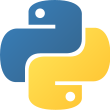

- [EN COURS] DUT Informatique
- [OBTENU - 2018] Baccalauréat Scientifique (mention Bien)
- [OBTENU - 2015] Brevet général et technologique (mention Très Bien)
| Java |  |
| PL/SQL |  |
| HTML5 | |
| CSS3 | |
| JavaScript | |
| Python |  |
Aujourd'hui étudiant en deuxième année d'informatique à l'IUT Paris Descartes, j'ai obtenu mon bac mention
Bien en série Scientifique, option Sciences de l'Ingénieur, et spécialité Informatique et Sciences du Numérique, au lycée
Charles de Gaulle de Poissy.
Mon intérêt pour l'informatique a débuté en classe de 4e, où j'avais commencé à apprendre le HTML et CSS de façon autonome.
Au cours de mes années lycée, j'ai été amené à réaliser différents projets dans lesquels j'ai toujours pu insérer une
partie informatique afin de pouvoir m'en occuper et développer mes compétences. C'est ainsi que j'ai réalisé des
programmes pour Arduino en première et terminale. Ce sont à ces occasions que j'ai découvert implicitement le langage C.
J'ai aussi réalisé un projet en Python pour ma spécialité de terminale : il s'agissait de réaliser une application
permettant d'effectuer des tests psychotechniques. J'aurais donc étudié divers langages et travaillé ma réflexion
algorithmique avant de commencer mon DUT Informatique.
Au cours de ma première année de DUT Informatique, j'ai appris les bases des langages C et C++ ainsi que celles du Java
- mon langage préféré que je continue d'approfondir cette année. J'ai également pu retrouver le HTML et le CSS, apprendre
le JavaScript, et découvrir les outils de gestion des bases de données (en parallèle du langage SQL).
Certains de mes projets sont disponibles sur mon GitHub (voir partie Contact).